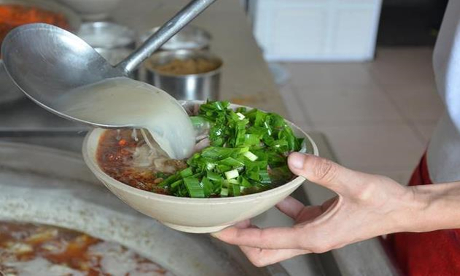

喝羊肉冲汤对于宝丰已不单单是一种饮食习惯，而且是一种文化，一种宝丰人与之不可分割的情愫。在异地工作的宝丰人，回到宝丰的第一件事就是喝一碗羊肉冲汤。羊肉冲汤的制作中，有一道工序就是冲汤，即将熬制成的滚烫的汤浇入盛有熟羊肉及羊杂碎的碗中，再用汤勺滗住碗里的熟羊肉或羊杂碎，将汤倒回锅里。由于这个简单而又重要的过程，以羊肉及羊杂碎为食材的汤，在宝丰有了个好听的名字——羊肉冲汤。
友情链接：平顶山市人民政府 平顶山旅游政务网 平顶山地情网 平顶山天气预报 平顶山地图
版权所有 © 2018 河南大学环境与规划学院 中国·河南·开封·河南大学金明校区
电话：18637886278 电子邮件：giserwangziheng@163.com 邮编：475000